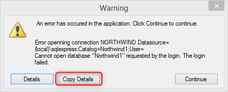
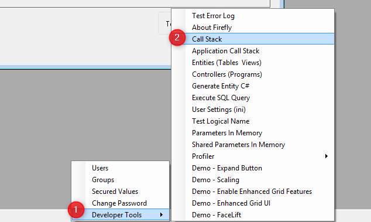
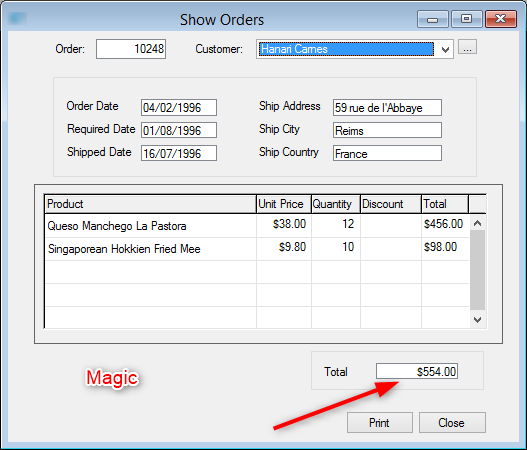
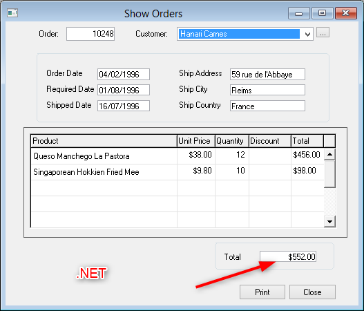

A good issue report must include:
We do not know or understand the deferent business domains of each appliaction, we need a set of steps that anyone can follow without any understanding of the application domain and language.
1. Menu Program
2. Menu Orders
3. Click Ctrl R
4. type order 10248
5. Click Enter
6. You should see the order information of order 10248
Magic result - order total is 554
.NET result - Order total is 552
Goto any order, the total is incorrect.
When you get an error - click "Copy Details" and paste it

If there is no error include the callstack (by default Ctrl-F12 for most applications) or from Developer tools menu

In case you do not see the Developer tools menu, please refer to:
http://doc.fireflymigration.com/access-developer-tools-and-users-management-menu.html
We need to make sure that we see what you see - and without screenshots that is a lot harder.
We use a cool tool called Screenprosso to take screen shots but you can use any tool.
It's important to include a screen shot in magic and in .NET so that we can clearly see the problem.

Profiler log is essential especially when a process is involved. It is a good practice to attach it anyway for every issue.
Please refer to:
http://doc.fireflymigration.com/using-firefly-profiler.html
For the complete guide of how to report an issue, please refer to:
http://doc.fireflymigration.com/using-issue-tracker.html